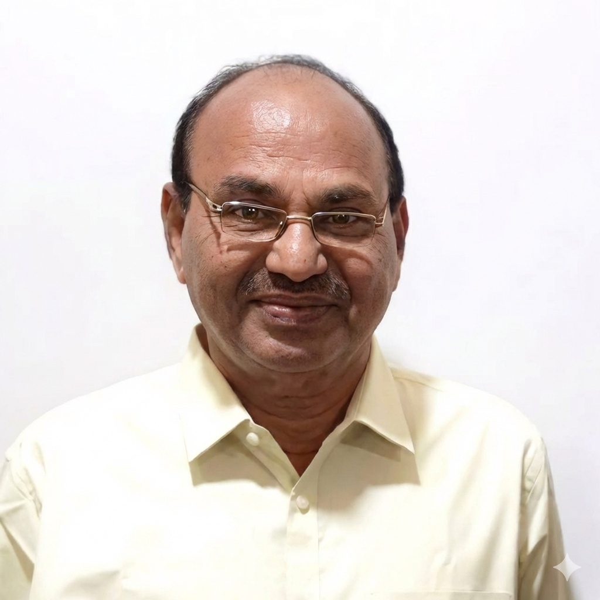

Institutional Advisor
Sir CRR Educational Institutions

KASUKURTI SREEMANNARAYANA
Date of Birth
01-07-1947
Age
78 Years
Educational Qualifications
M.Com., M.Phil.
Residential Address
11-123, KSR Thota, Gavaravaram,
Eluru - 534003, W.G. Dist., A.P.
Eluru - 534003, W.G. Dist., A.P.
Teaching Experience
- Worked as Lecturer in the P.G. Department of Commerce, Sir CRR College, Eluru from May 1973 to June 2005. (Taught M.Com. and M.B.A. students)
- Worked as Principal, Sir CRR College, Eluru during 2004 - 2005.
- Retired from service on 30.06.2005.
Administrative Experience
- Worked as Administrative Officer, Sir CRR Educational Institutions, Eluru from 01.07.2005 to 06.10.2017.
- Presently working as Advisor, Sir CRR Educational Institutions, Eluru from 01.06.2019.